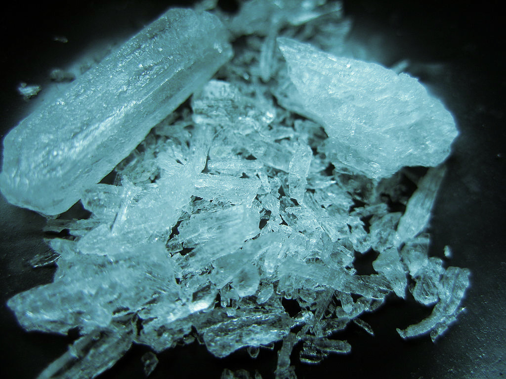

Breaking Bad Meth Candy

Ingredients
- 1/2 Cup Water
- 3/4 cup light corn syrup
- 2 cups granulated sugar
- 2 teaspoons flavoring extract
- Blue ood coloring
Steps
- Mix all ingredients together in a medium saucepan set over medium heat.
- Stir until boiling. Once the liquid begins to boil, do not stir until finished.
- While the candy comes to a boil, line a baking sheet with aluminum foil and spray the foil with nonstick spray. Set aside.
- Once boiling, place a candy thermometer in the liquid and monitor closely. when the liquid reaches 300°F, take off the heat and set aside.
- Allow the mixture to cool until the bubbles quit breaking at the surface of the liquid.
- Pour liquid onto the prepared baking sheet.
- Allow to cool until fully hardened. Then, break apart to the size desired.